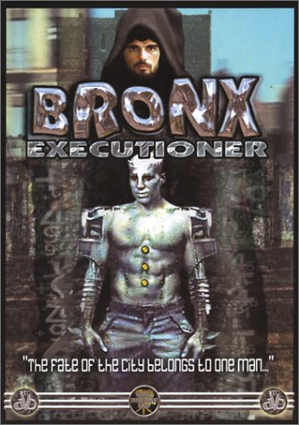

Movie review by : SFAM
Year : 1989
Directed by : Vanio Amici
Written by : Vanio Amici & Piero Regnoli
Degree of Cyberpunk visuals : Very Low
Correlation to Cyberpunk themes : Low
Rating : 2/10
Key cast members :

Overview: Bronx Executioner is yet another example of a movie where they spent more on the completely unrelated cover art than they did the entire production. Truly, looking at that, and in reading the cool description, you'd think this is might be a pretty decent low-budget cyberpunk flick. Here's the description:
Android gangs battle humans and Robotic Replicants in the New York City of the near future. The sector sheriff must join forces with a gigantic, yet unpredictable Replicant in order to save the city...
Now, for what you actually get:
The Bottom Line: The story pretty much sums this movie up: it's about a body builder replicant who falls in love with a human (even though he doesn't have the capability to fall in love) who gets raped by really mean replicants, so the body builder replicant asks the junior cop to help him get even with the meanie replicants. Sound stupid? Bingo! It's pretty bad. And unfortunately, it's not so bad that it's good. The gratuitous breast shots just can't save this turkey. It's just bad, K?